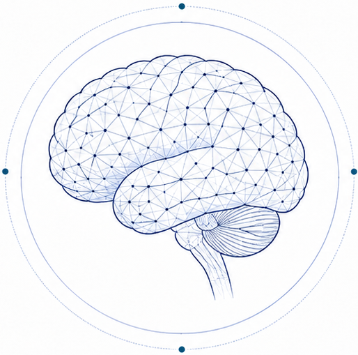
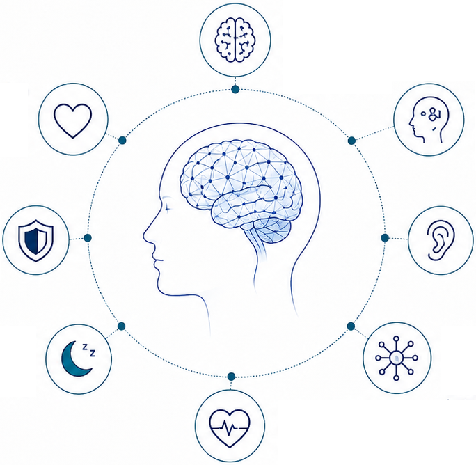
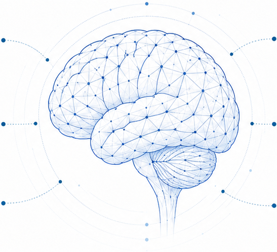
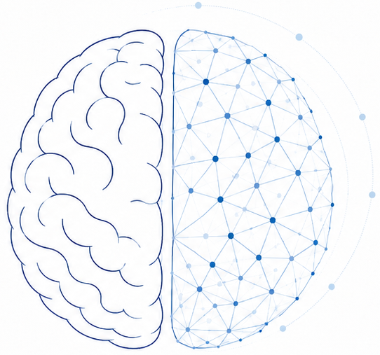
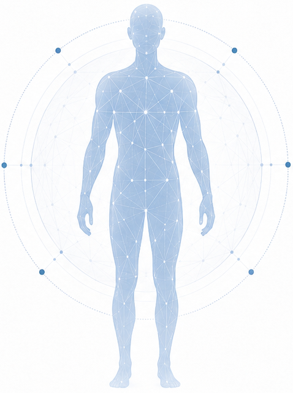
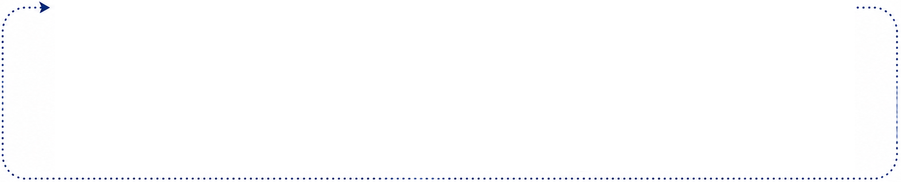
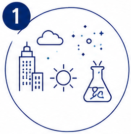
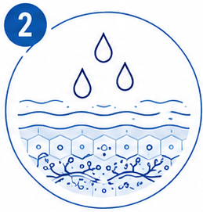
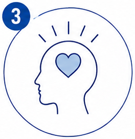
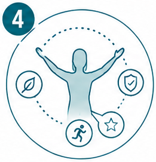

MENTAL HEALTH
MATTERS
The Foundation of a Better Life
Mental health shapes how we think, feel, act, adapt, and recover—every day and across every stage of life.
Influences daily mood, behavior, and decisions
Determines how we cope with stress and challenges
Supports relationships, productivity, and creativity
Supports cognition, memory, decision-making, and healthy brain aging
Mental health influences cognitive resilience and long-term brain function
WHAT SHAPES MENTAL HEALTH?
Key Factors That Influence Mental Health and Cognition
What Increases Mental Load
Chronic stress
Poor sleep
Social isolation
Unhealthy lifestyle
Emotional burden
Environmental exposures

What Helps Mental Health
Emotional balance
Better coping capacity
Positive mood
Stronger resilience
Improved self-regulation
Stable daily adaptation
BRAIN–BODY–EMOTION–COGNITION INTEGRATION
Mental health emerges from the dynamic interaction of multiple biological and behavioral systems that support brain health and cognitive function.

Brain Health & Neural Networks
Structural integrity, connectivity, and neuroplasticity.
Cognition (Memory, Focus, Executive Function)
Enables thinking, learning, problem-solving, and decision-making.
Sensory Integration
Processes and integrates sensory input to support attention and regulation.
Neuroendocrine Signaling
Hormonal and immune signals that influence mood, energy, and brain function.
Autonomic Balance (Heart, HRV, Stress Response)
Maintains physiological stability and stress resilience.
Sleep Quality
Restores brain function and supports memory, mood, and recovery.
Behavioral Stability
Supports routine, impulse control, and adaptive behavior.
Emotion Regulation
Modulates emotional responses and resilience.
COGNITION MATTERS
Mental health and cognitive function are closely connected across daily life and healthy aging.
Memory & Learning
Store, recall, and use information to navigate daily life.
Processing Speed
Take in, understand, and respond to information efficiently.
Attention & Focus
Sustain attention, filter distractions, and stay engaged.

Brain Resilience
Adapt, recover, and maintain function in the face of stress and change.
Executive Function & Decision-Making
Plan, organize, solve problems, and make sound choices.
Everyday Performance
Apply cognitive skills to work, relationships, and daily activities.
MENTAL HEALTH,
COGNITIVE DECLINE
& DEMENTIA
Why the mind–brain–body connection matters over the lifespan
Chronic stress, sleep disturbance, cardiometabolic burden, and inflammation may be associated with poorer brain health.
Social connection, physical activity, good sleep, and cognitive engagement may help support resilience.
Mood, cognition, and daily function can influence each other over time.
Individual variability matters. Risk and resilience factors differ across people and across the lifespan.

Early Life
Building foundations
Adulthood
Maintaining health and function
Midlife
Managing risk and building resilience
Later Life
Supporting brain health and daily function
CORE MENTAL HEALTH DOMAINS
Interconnected domains regulate mental health, cognition, and daily adaptation.
Mood Stability
Maintains emotional balance and positive outlook.
Stress Recovery
Regulates stress response and supports calm.
Sleep Quality
Restorative sleep supports brain and body repair.

Cognition & Memory
Supports learning, memory formation, and mental clarity.
Focus & Executive Function
Enables attention, planning, and effective decisions.
Resilience & Adaptability
Supports coping, flexibility, and thriving through change.
Motivation & Energy
Drives initiative, engagement, and sustained energy.
SECTION 7 / INTEGRATED CYCLE
THE INTEGRATED CYCLE OF BEAUTY, HEALTH, AND WELLBEING
A continuous pathway linking exposures, skin function, emotion, and long-term wellbeing.


EXPOSOME BALANCE
Reduce harmful exposures and support protective factors.

HEALTHY SKIN
Strong barrier, balanced microbiome, and optimal skin function.

POSITIVE EMOTION & CONFIDENCE
Better self-perception, resilience, and emotional wellbeing.

HEALTHIER WELLBEING
Sustained vitality, mental balance, and quality of life over time.